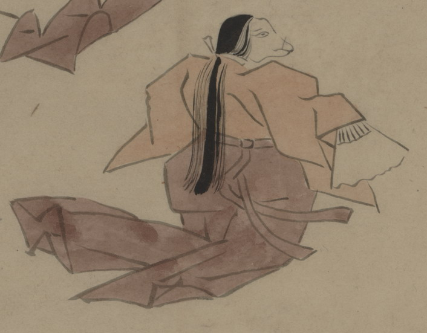

扇子を持った女の化物。狐のような顔をしており、長い髪を首元で結んでいる。薄赤色の上着に、小豆色の袴を着て、舞うようなしぐさをしている。あるいは白拍子か。
出典：親書誌：U426_nichibunken_0150：付喪神絵詞；ツクモガミエコトバ／日付：2010／資源識別子：U426_nichibunken_0150_0034_0000
Copyright (c)2010- International Research Center for Japanese Studies, Kyoto, Japan. All rights reserved.